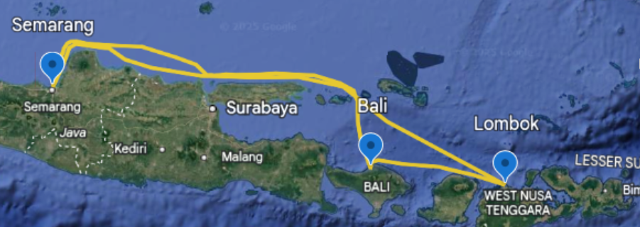
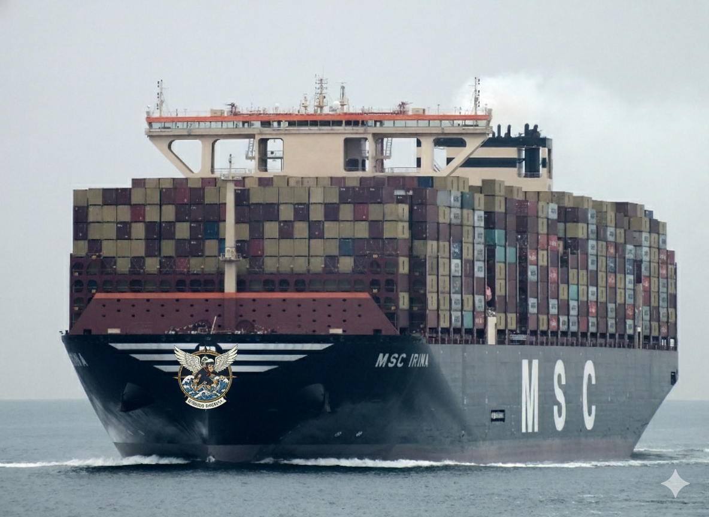

PZE Terbang
Kapal pesiar raksasa ini menciptakan koridor ekonomi baru, berlayar dari Balikpapan sebagai hub logistik Kalimantan Timur, melanjutkan ke Makassar sebagai pusat perdagangan Indonesia Timur, dan berakhir di Kalimantan Selatan untuk memperkuat konektivitas antar pulau. Rute ini dirancang untuk memadukan fungsi transportasi penumpang dan peran strategis dalam menopang arus barang dan jasa di kawasan tengah Indonesia.
|

RZL Terbang
Kapal ini menghubungkan destinasi wisata unggulan dengan memulai pelayaran dari NTB, berlanjut menuju pulau ikonik Bali untuk menikmati pesona budaya dan alam, dan mengakhiri perjalanan besar di Semarang, gerbang Jawa Tengah. Rute ini dirancang khusus untuk membawa wisatawan menikmati keindahan bahari Nusantara sekaligus menyediakan sarana transportasi yang mewah dan berkapasitas sangat besar.
|

KZG Terbang
Kapal mewah ini didesain untuk menghubungkan Barat dan Timur Nusantara, memulai pelayaran dari Pontianak di Kalimantan untuk menarik wisatawan dari wilayah tersebut, lalu melintasi laut menuju dua permata pariwisata Indonesia, yaitu Bali dan Lombok, untuk menawarkan pengalaman liburan pulau yang tak terlupakan. Rute ini menyeimbangkan antara mobilitas regional dan daya tarik destinasi wisata bahari kelas dunia.
|

MSC Oreo
Kapal kargo MSC Irina melayani jalur logistik vital yang menghubungkan Pontianak dan Balikpapan di Kalimantan dengan pusat perdagangan Makassar di Sulawesi, melewati Kalimantan Selatan untuk optimalisasi muatan. Layanan ini menawarkan solusi pengiriman kontainer yang efisien dengan tarif tetap Rp 5.000.000 per kontainer, mendukung kelancaran distribusi barang di Indonesia bagian tengah.
|